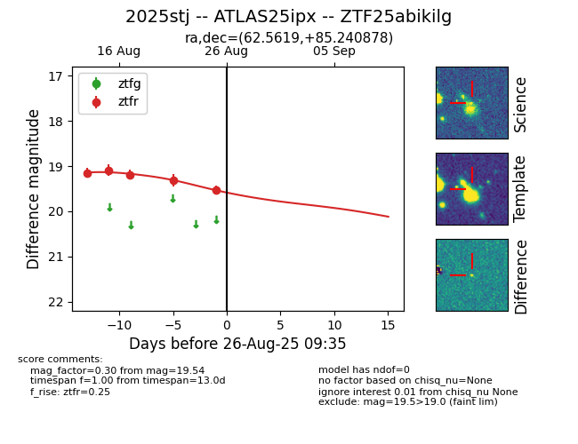

Target 2025stj at 2025-08-26 20:17, see:
FINK: fink-portal.org/ZTF25abikilg
Lasair: lasair-ztf.lsst.ac.uk/objects/ZTF25abikilg
ALeRCE: alerce.online/object/ZTF25abikilg
TNS: wis-tns.org/object/2025stj
YSE: ziggy.ucolick.org/yse/transient_detail/2025stj
alt names
ZTF25abikilg (ztf,fink)
2025stj (tns,yse)
ATLAS25ipx (atlas)
coordinates:
equatorial (ra, dec) = (62.5619,+85.24088)
galactic (l, b) = (126.9037,+23.99491)
photometry
last atlasc=18.81, atlaso=18.71, ztfr=19.54
1 atlasc, 2 atlaso, 5 ztfr detections
